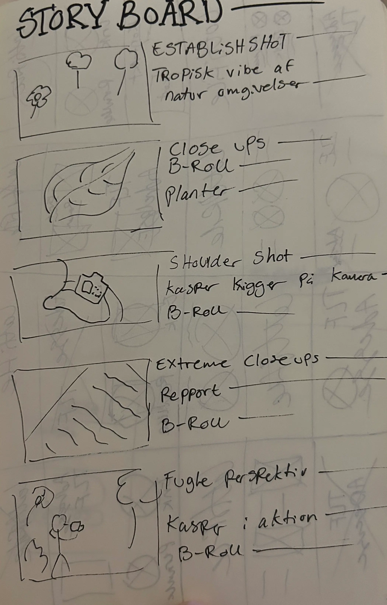
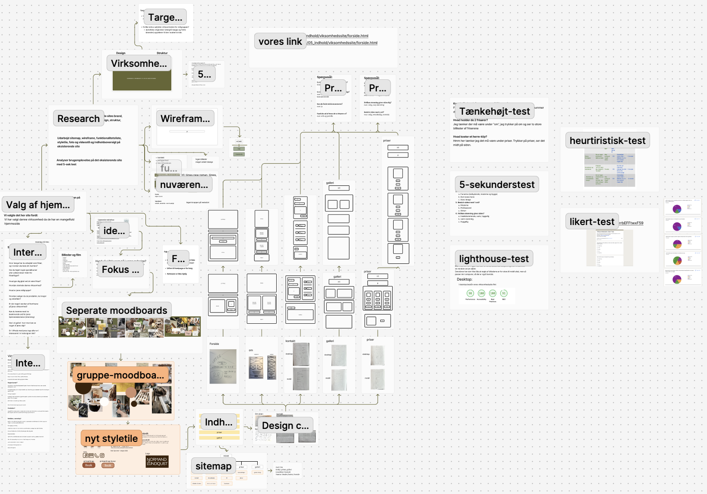
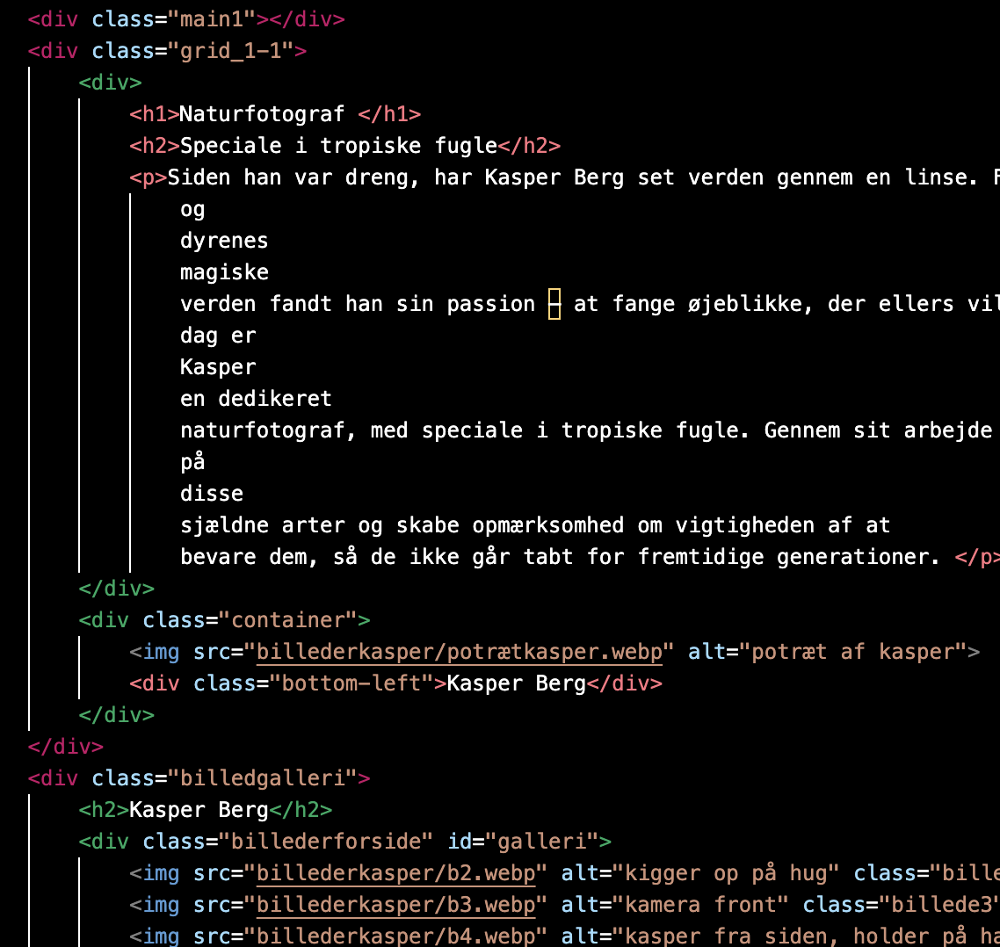

Tema 5
Grundlæggende indhold
I tema 5 arbejdede vi i grupper og fokuserede på indholdsproduktion med vægt på præproduktion, produktion
og
postproduktion.
Vi lærte at tilpasse indholdet til målgruppen, så der skabes en klar sammenhæng mellem indholdet og det
færdige website.
Derudover blev vi introduceret til vigtige aspekter som lys og kameravinkler samt brugen af ekstern lyd
for at forbedre
kvaliteten af produktionen.
Til redigering arbejdede vi med Adobe Audition og Adobe Premiere Pro, mens vi brugte Adobe After Effects
til at skabe og
integrere vektor animationer via LottieFiles.


Proces
Passionsite
Under præproduktionen udarbejde vi en skudliste samt spørgsmål til interview af vores person med en passion, Kasper Berg.
Vi mødtes med Kasper for at optage video og tage billeder af både ham og
omgivelserne.
I postproduktionen arbejdede vi individuelt med at redigere en video baseret på det
indsamlede materiale. Hver af os
skabte derefter en samlet præsentation bestående af en video, et galleri og et
website,
som inkluderede en
Lottie-animation, der passede til indholdet.
Virksomhedssite
VI havde udarbejdet en teamkontrakt for at forventningsafstemme imellem alle gruppemedlemmer. derudover benyttede vi Trello og Scrum-metoden til projektstyring. Her kunne vi hver dag krydse af vores “to-do” via trello og vha. Scrum kunne vi opdatere hinanden om hvor langt vi er og diskutere og planlægge næste step i processen. Procesarbejdet omkring virksomhedssitet forgik i Figjam og Figma. Her blev lige fra idegenerering til test af site lagt ind.
Vi udarbejde moodboard, styletile, sitemap, wireframes og digitalprototype. Samt testede vi virksomhedens nuværende site, vores prototype og vores nye site.
Kode
Begge sites er der benyttet lottifile, som et Heroimage. Derudover er begge sites obygget med grid, vha. div. Begge websites er også responsive, så de virker i både desktop og mobil format, dette er gjort vha. mediaquery.
